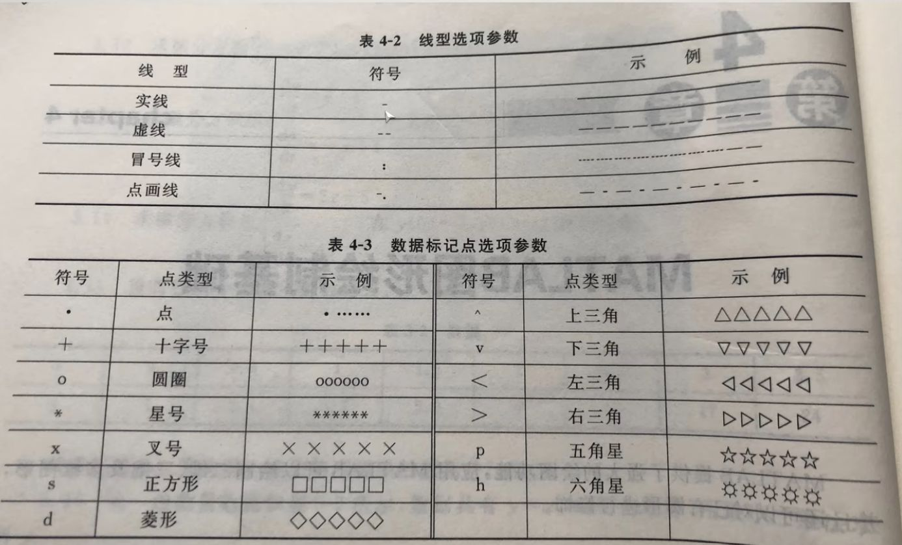

Matlab 笔记---学习记录¶
MATLAB（Matrix Laboratory）是由美国 MathWorks 公司开发的一款高性能的商业数学软件，广泛应用于工程计算、数据分析、算法开发、信号与图像处理、控制系统设计、通信仿真、机器学习及科学可视化等领域。其核心优势在于以矩阵运算为基础，语法简洁，无需显式声明变量类型，支持交互式编程与脚本开发，极大提升了科学计算与工程仿真的效率。
MATLAB 拥有丰富的工具箱（Toolbox），如 Simulink（用于动态系统建模与仿真）、Control System Toolbox、Signal Processing Toolbox、Image Processing Toolbox 等，可满足不同专业领域的深度需求。此外，MATLAB 支持与 C/C++、Java、Python、Excel 等外部语言和工具的集成，并能生成可部署的代码，是科研、教学和工业界广泛采用的重要技术平台。
本文相关的Matlab课件与代码存放仓库地址：Matlab入门学习
基础语法¶
变量注释与运算符¶
清除终端内容¶
运算符¶
| 算数 | 描述 | 关系 | 逻辑 | 位运算 | 赋值 | ||||
|---|---|---|---|---|---|---|---|---|---|
+ |
加法 | == |
等于 | && |
逻辑与（短路运算） | bitand |
按位与 | = |
赋值 |
- |
减法 | ~= |
不等于 | || |
逻辑或（短路运算） | bitor |
按位或 | += |
加赋值 |
* |
矩阵乘法 | < |
小于 | & |
逐元素逻辑与 | bitxor |
按位异或 | -= |
减赋值 |
.* |
逐元素乘法 | <= |
小于等于 | | |
逐元素逻辑或 | bitcmp |
按位取反 | *= |
乘赋值 |
/ |
矩阵右除 | > |
大于 | ~ |
逻辑非 | bitshift |
位移 | /= |
除赋值 |
./ |
逐元素右除 | >= |
大于等于 | ^= |
幂赋值 | ||||
^ |
矩阵幂 |
特殊运算符：
:：生成序列或选择数组的元素;：用于分隔行或命令...：续行符，用于将一个长命令分成多行
注释¶
基本运算¶
s = 'a' %s 是一个字符数组，包含单个字符 'a'
result = abs(a) % 结果为97，ASCAL码
result = char(666) %将数字666转换为其对应的Unicode字符
lengeh(str) %字符串长度
exp(2) % exp函数用于计算自然指数函数,这里表示e的平方
a = b = 666 %把666赋给b再给a
rand、randi和randn的区别¶

元胞数组¶
% cell 类似python元组
A = cell(1,6)
A{2} = eye(3) %生成一个3x3对角线数值为1的单位矩阵
A{5} = magic(5) %生成n阶幻方矩阵
B = A{5}

[!NOTE]
MATLAB是从1开始的不是从0开始的，这与绝大部分的编程语言不一样。
结构体¶
% 修正 struct 函数的参数格式，将 name 字段值设为元胞数组
books = struct('name', {'Machine Learning', 'data mining'}, 'price', [30 40]);
books.name % 属性
books.name(1) % 返回 cell
books.name{1} % 返回值
矩阵操作¶
矩阵的数学运算¶
A = [1 2 3;4 5 6;7 8 9] %每行元素的分隔符为空格或者逗号
B = A’ %矩阵转秩，行变列，列变行
C = A(:) %按列每个元素依次按行赋值
D = inv(A) % 求矩阵的逆，只有方阵可以求逆
E = zeros(10,5,3) % 三维 十行五列 零矩阵
矩阵 \ 左除 / 右除
矩阵创建、矩阵构造拼接与逻辑矩阵¶
%矩阵的定义和构造
A = [1 2 3 4 5 6] %创建一维数组
B = 1:2:9 %初值 步长 终值，创建一维数组
C = repmat(B,3,1) %repmat 横重复3次，列重复2次
D = ones(2,4) %生成2行四列全1矩阵
.* 和 ./ %矩阵元素相乘或除，不是矩阵乘除
%矩阵拼接
A = magic(5) %创建一个 5 × 5 的魔方阵,其中每一行、每一列和两个主对角线上的数字的和都相等
B = A(2,3) %取A矩阵第二行第三个
C = A(3,:) % :表示取全部 第三行
D = A(:,4) %取第四列
[m,n] = find(A>20) %把大于20的值按下标将第几行第几列分别存入m和n中
% 在矩阵的第二行插入[10 11 12]，本质还是矩阵拼接
newRow = [10 11 12];
rowIndex = 2;
A = [A(1:rowIndex-1, :); newRow; A(rowIndex:end, :)];
[numRows, numCols] = size(A4) % size语句返回行数列数，矩阵形式
rankA4 = rank(A4) %取矩阵的秩
%在 MATLAB 中，logical() 函数用于将输入数据转换为逻辑数组（logical array），逻辑数组的元素仅能是 0 和 1，分别表示 false（假）和 true（真）。
A = [1, 0, 3;
0, 5, 6;
7, 0, 9];
B = logical(A);
%使用逻辑数组来筛选原数组中的元素。例如，假设我们想找出 A 中所有大于 5 的元素：
A = [1, 2, 3;
4, 5, 6;
7, 8, 9];
B = A > 5; % 生成逻辑矩阵
filteredValues = A(B); % 使用逻辑矩阵筛选
% reshape 函数用于重新排列矩阵的元素，以形成具有不同维度的矩阵。
A = [1, 2, 3, 4;
5, 6, 7, 8];
B = reshape(A, [4, 2]);% 将 A 变为 4 行 2 列的矩阵
查找矩阵中的非零元素¶
查找稀疏矩阵中的非零元素，并打印出它们的值及其所在的行列位置。
A = [0 0 3 0; 1 0 0 1; 0 9 0 0; 2 0 0 0];
% 获取非零元素的索引
[row, col, val] = find(A);
% 打印结果
fprintf('非零元素及其位置:\n');
for i = 1:length(val)
fprintf('值: %d, 行: %d, 列: %d\n', val(i), row(i), col(i));
end
用矩阵除法求方程组的解¶
在 MATLAB 中，可以使用矩阵除法对线性方程组进行求解。如果你有一个线性方程组的形式：
$$
Ax = b
$$
其中 \( A \) 是系数矩阵，\( x \) 是未知数向量，\( b \) 是常数向量，你可以使用矩阵左除操作符 \ 来求解。
假设我们有以下线性方程组：
我们可以将其表示为矩阵形式 \( Ax = b \)，其中：
代码示例：
% 定义系数矩阵A和常数向量b
A = [2, 3; 4, 1];
b = [5; 6];
% 使用矩阵左除操作符求解方程组
x = A \ b;
% 显示结果
disp('方程组的解为：');
disp(x);
步骤如下：
- 定义矩阵：
A是系数矩阵，包含方程的系数。-
b是常数向量，包含方程右侧的常数。 -
矩阵左除：
-
使用
A \ b计算 \( x \)。这是 MATLAB 中求解线性方程组的标准方法，相当于求解 \( Ax = b \)。 -
结果显示：
- 使用
disp函数显示解。
注意事项：
- 确保矩阵 \( A \) 是方阵且可逆。如果 \( A \) 不是方阵，或者其行列式为零，则会导致无解或无穷多解的情况。
- 通过
rank(A)和rank([A b])可以进一步分析方程组的解的性质。
使用矩阵除法在 MATLAB 中求解线性方程组是一种高效且简洁的方法。只需定义系数矩阵和常数向量，然后使用左除操作符 \ 即可得到解。
逻辑与流程控制¶
if...else...end
for...end
while...end
switch...case...otherwise...end
for 循环变量 = 初值:步长:终值
执行语句1
...
执行语句n
end
%步长为1 可以省略
while 条件表达式
执行语句1
...
执行语句n
end
if 条件表达式
...
语句体
...
end
switch 表达式（数值和字符串）
case 数值和字符串1
语句体1
case 数值和字符串2
语句体2
...
otherwise
语句体n
end
函数文件和脚本文件¶
函数文件关键字：function，函数名与文件名一样，需要与脚本文件在同一工作路径下
示例：创建一个简单的函数文件 add.m：
可以在脚本文件中调用该函数文件，例如：sum = add(3, 5); % sum 将为 8
常用函数¶
复数运算函数表¶
| 函数名 | 说明 |
|---|---|
| real(z) | 返回复数z的实部 |
| imag(z) | 返回复数z的虚部 |
| angle(z) | 返回复数z的幅角 |
| abs(z) | 返回复数z的模 |
| conj(z) | 返回复数z的共轭复数 |
| complex(a,b) | 以a和b分别作为实部和虚部，创建复数z |
常用数学函数¶
| 常用函数 | 含义 |
|---|---|
| sin(x) | 正弦函数，以“弧度”为单位 |
| sqrt(x) | 平方根函数 |
| exp(x) | 指数函数 |
| zeros(m,n) | 创建m行n列的零矩阵 |
| ones(m,n) | 创建m行n列的矩阵，矩阵的所有元素为1 |
| size(A) | 计算矩阵A各维尺寸。size(A,1) ; size(A,2); [m1,m2] =size(A) |
| length(A) | 计算矩阵A最大维尺寸 |
| rand(m,n) | 产生m×n阶由0-1之间均匀取值的数值组成的矩阵 |
矩阵函数¶
| 常用函数 | 含义 |
|---|---|
| det(A) | 计算方阵行列式 |
| rank(A) | 计算矩阵的秩 |
| inv(A) | 求逆矩阵 |
| find(表达式) | 查找符合表达式的元素并返回其下标 |
| max(A) | 数组中各列的最大值 |
| min(A) | 数组中各列的最小值 |
| mean(A) | 数组中各列的平均值 |
| std(A) | 数组中各列的标准差 |
| size(A) | 数组的行列数 |
| length(A) | 数组的最大维数 |
nargin函数，返回接收参数¶
在MATLAB中，nargin是一个内置函数，用于返回函数实际接收的输入参数的个数。在编写函数时，nargin可以帮助你根据输入参数的个数来决定函数应执行的操作。
find函数，返回符合条件的数组下标¶
% find 函数
A = [1, 2, 3; 4, 5, 6; 7, 8, 9]; % 创建一个 3x3 矩阵
indices = find(A > 5); % 找到大于 5 的元素的线性索引
[row, col] = find(A > 5); % 返回大于 5 的元素的行和列索引
indices = find(A > 5, 2); % 找到前两个大于 5 的元素的线性索引
floor函数，确保变量是否为整数¶
floor(N) == N 的作用是确保 N 是一个整数。
具体来说：
floor(N)函数返回不大于N的最大整数（即向下取整）。- 如果
N已经是整数，那么floor(N)应该等于N本身。 - 如果
N是一个小数或浮点数，floor(N)将取等于N的整数部分，这时floor(N)和N不相等。
因此，floor(N) == N 这个条件用来判断 N 是否为整数。
判断函数isnumeric、isscalar、isempty、isnan¶
isnumeric(N)：检查N是否是数值。
isscalar(N)：检查N是否是标量。
isempty(N)：检查N是否为空。
isnan(N) :isnan 函数在 MATLAB 中用于检查输入是否为 "Not-a-Number" (NaN) 值。isnan 返回一个逻辑数组，其中包含 true 表示对应位置的元素为 NaN，false 则表示对应位置的元素不是 NaN。
类型转换函数¶
int2str(N) ：将N转换为字符串
str2double ：将输入转换为数字
num2str : 用于将数值转换为字符串。这个函数在需要将数值与其它字符串连接或显示时非常有用。
显示函数fprintf、disp¶
% disp函数不返回输出，适合简单的输出
x = 42;
disp('The value of x is:');
disp(x);
% fprintf 返回输出的字符数，支持格式字符串
x = 42;
y = 3.14159;
fprintf('The value of x is: %d\n', x);
fprintf('The value of y is: %.2f\n', y);
length函数与size函数¶
v = [1, 2, 3, 4, 5]; %计算向量的长度
L = length(v); % L 将为 5
M = [1 2 3; 4 5 6]; %计算矩阵的长度
L = length(M); % L 将为 3，因为矩阵的最大维度是3（列数）
str = 'Hello'; %计算字符串的字符数
L = length(str); % L 将为 5
%size返回每一维度数组的大小
A = [1 2 3; 4 5 6];
dims = size(A); % dims 返回 [2 3]，表示A有2行3列
错误信息抛出error¶
打印错误信息
请求用户输入input¶
linspace与logspace¶
y = linspace(a, b, n)
linspace 会生成一个行向量，其中包含从 a 到 b 的 n 个均匀分布的点。n可选默认为100。
y = logspace(a, b, n)
logspace 会生成 n 个在 10^a 到 10^b 之间均匀分布的数值。
logspace 函数用于生成在对数尺度上均匀分布的数值数组。这在处理指数增长或衰减的情况时尤其有用。
MATLAB绘图¶
MATLAB 进阶绘图_matlab horizontalalignment-CSDN博客
二维平面绘图¶
数据处理¶
x = 0:0.01:2*pi; %数据赋值
y = sin(x);
figure %建立一个幕布
t = linspace(0, 6*pi, 1000); % 使用linspace创建从0到6π的1000个点
绘图设置¶
figure; % 创建新的图形窗口
plot(x,y)
plot(x, y, 'b-'); %plot函数根据给定的x和y坐标绘制图形，'b-'指定使用蓝色实线绘制。
plot(t, y,'r','LineWidth', 1);
% plot(t, y, '--b', 'LineWidth', 2); % 使用虚线和蓝色,线粗为2
xlim([0 6*pi]); %设置当前坐标轴的x轴范围
xticks(0:2*pi:6*pi); %设置当前坐标轴x轴上的刻度位置
ylim([0 1.4]); %设置当前坐标轴的y轴范围
yticks(0.95:0.05:1.05); %设置y轴的刻度为从0.95到1.05，间隔为0.05，刻度位置为0.95, 1.00, 1.05
axis([0 0.2 -1.2 1.2]) %x 轴范围：从 0 到 0.2；y 轴范围：从 -1.2 到 1.2，限制 x 轴和 y 轴的显示范围
多个图表绘制
subplot(2, 2, 1); % 创建2行2列的子图，激活第1个子图
subplot(m, n, p)
m：网格的行数。
n：网格的列数。
p：指定当前活动图的位置，从左到右、从上到下编号。
将多个曲线绘制在同一张图中
x = linspace(0, 2*pi, 100); % 从0到2π生成100个点
y1 = sin(x); % 第一条曲线
y2 = cos(x); % 第二条曲线
y3 = sin(2*x); % 第三条曲线
% 一次性绘制所有曲线
plot(x, y1, 'r', x, y2, 'g', x, y3, 'b'); % 'r', 'g', 'b' 为颜色
legend('sin(x)', 'cos(x)', 'sin(2x)'); % 添加图例
或者使用hold on;
y1 = sin(x);
plot(x, y1, 'r'); % 绘制第一条曲线
hold on; % 保持当前图形
y2 = cos(x);
plot(x, y2, 'g'); % 绘制第二条曲线
grid on; % 添加网格
hold off; % 释放当前图形
绘图颜色参数选项
| 颜色 | 字符 | 颜色 | 字符 |
|---|---|---|---|
| 红 | r | 粉红 | m |
| 绿 | g | 青 | c |
| 蓝 | b | 白 | w |
| 黄 | y | 黑 | k |

图例标注¶
title('y = sin(x)') %设置标题
sgtitle('Your Title Here') %用于在多个子图的图形窗口中添加一个统一的标题
xlable('x') %在x轴的底部添加标签"x"。
ylable('sin(x)')
stem(t_sampled, f_sampled, 'r'); % 采样点，使用 stem 函数绘制，t:时间向量，f采样点的函数值向量
legend('label1', 'label2', ..., 'labelN'); %添加图例，以便为不同的曲线或数据系列提供标签
grid on; % 添加网格
axis equal;%axis equal命令设置图形的坐标轴比例，使得单位长度在x轴和y轴方向上相同。
legend('sin(x)', 'cos(x)', 'sin(2x)', 'Location', 'northeast'); %添加位置参数来自定义图例的位置,'best'：自动选择最佳位置
legend('sin(x)', 'cos(x)', 'sin(2x)', 'box', 'off'); % 关闭框线
legend('sin(x)', 'cos(x)', 'sin(2x)', 'FontSize', 12); % 设置 FontSize 属性来更改图例的字体大小
不同图形的绘制¶
%具体的图形样式可见下文第三期题目
%柱形图
x = [1 2 5 4 8];
y = [x;1:5];
bar(y,"stacked"); %stacked是一个可选的参数，代表堆栈
barh(y,"stacked"); %barh 水平式的bar
%饼图
a = [15 8 31 46];
pie(a); %画出饼图，自动计算百分比
pie(a,[0,0,0,1]); %画出饼图，并分离第四部分
pie3(a,[1,1,1,1]); %3代表三维
%极坐标图
n = 6;
theta = linspace(0, 2*pi, n+1); % 从 0 到 2\pi 生成 n+1 个点，以便闭合六边形
r = ones(size(theta));%size返回theta向量的元素个数
polar(theta,r);
三维图像的绘制¶
mesh 与 surf¶
x = -3.5:0.2:3.5; % 创建从 -3.5 到 3.5 的 x 数据，步长为 0.2
y = -3.5:0.2:3.5; % 创建从 -3.5 到 3.5 的 y 数据，步长为 0.2
[X,Y] = meshgrid(x,y); % 创建网格矩阵 X 和 Y，适用于二维函数
Z = X .* exp(-X.^2 - Y.^2); % 计算 Z 的值，Z 为 X 和 Y 的复合函数
% 绘制网格图
subplot(1,2,1); % 在 1 行 2 列的图形中选择第一个位置
mesh(X,Y,Z); % 绘制网格图
% 绘制表面图
subplot(1,2,2); % 选择第二个位置
surf(X,Y,Z); % 绘制表面图

-
网格图（Mesh Plot）：显示了函数 Z 的网格结构，使用线条来表示表面。
-
表面图（Surface Plot）：显示了函数的表面，使用颜色和光泽效果来表示高度信息。
mesh 函数用于绘制三维网格图，它显示了一个网格的线条和表面轮廓。surf 函数用于绘制三维表面图，它不仅显示网格，还通过面填充色彩来表示数据值。
Note
colorbar; % 显示颜色条
shading interp; % 平滑着色
view(45, 30); % 设置观察角度
meshc() 与 surfc()¶
meshc() 与surfc()是在mesh()和surf()函数的基础上，创建三维网格图，并在底部添加等高线图。
x = -3.5:0.2:3.5; y = -3.5:0.2:3.5;
[X,Y] = meshgrid(x,y); Z = X.*exp(-X.^2-Y.^2);
subplot(1,2,1); meshc(X,Y,Z);
subplot(1,2,2); surfc(X,Y,Z);

信号产生与处理¶
考虑生成采样频率为 1000 Hz 的数据。 一个合适的时间矢量是
fs = 1000; %fs为采样频率即精度
t = (0:1/fs:1)'; % 0：?:1决定了采样时间为0-1s
%如果有一个矩阵 A 和一个列向量 b，可以使用 A * b 进行矩阵乘法，故通常转换为列向量。
y = sin(2*pi*50*t) + 2*sin(2*pi*120*t); % 可以创建由两个正弦波组成的采样信号 y，一个为 50 Hz；另一个为 120 Hz，振幅为原来的两倍。2 * pi * f 是将频率转换为角频率
%在信号中加入正态分布的白噪声，并绘制前 50 个点的曲线
noise = 0.5 * randn(size(y)); % 生成标准差为0.5的高斯白噪声
y_noisy = y + noise; % 将噪声添加到信号中
figure;
plot(t(1:50), y_noisy(1:50), 'b-o'); % 绘制带噪声的信号
hold on;
plot(t(1:50), y(1:50), 'r--'); % 绘制原始信号
xlabel('Time (s)');
ylabel('Amplitude');
title('Signal with Added White Noise (First 50 Points)');
legend('Noisy Signal', 'Original Signal'); % 添加图例
grid on;
hold off;

产生 1.5 秒钟的 50 Hz锯齿波（分别为方波），采样率为 10 kHz，同理如下
fs = 10000; %采样频率10k
t = (0:1/fs:1.5)'; % 0：?:1.5决定了采样时间为0-1.5s
x = square(2*pi*50*t); %占空比不填默认是50% x = square(2*pi*50*t,80);%占空比为80。
plot(t,x)
axis([0 0.2 -1.2 1.2]) %框定画图范围

常用的信号函数，使用方法同理
t --> 2*pi*f*t1 f频率，t1是个列向量，决定了采样间隔和采用时间
y = sawtooth(t, width) %生成锯齿波信号 width：可选参数，定义波形的上升或下降斜率，0.5 表示生成三角波
y = square(t, duty) %生成方波信号 duty：可选参数，定义方波的占空比（0到100之间，默认值为50）
y = tripuls(t, width) %生成三角脉冲信号 width：可选参数，定义脉冲的宽度（单位时间的比例，默认值为1）
y = rectpuls(t, width) %生成矩形脉冲信号 width：可选参数，定义脉冲的宽度（单位时间的比例，默认值为1)
%若取脉宽为20ms，width取值为20e-3
y = gauspuls(t, fc, bw) %生成高斯脉冲信号 fc：中心频率（Hz）bw：带宽（可选，单位为赫兹，默认为1)
x = -10:0.01:10; % 输入向量
y = sinc(x) %生成 sinc 函数，通常用于信号处理
plot(x, y);

添加高斯噪声
noise = sqrt(variance) * randn(size(A)); % 生成高斯白噪声，variance为噪声的方差
A_wnoise = A + sqrt(variance)*randn(size(A)); %输出信号
去除信号的线性趋势
detrend 函数可以从信号中去除线性趋势。
示例 1：去除线性趋势
% 生成示例信号（例如，带有线性趋势的正弦波）
t = 0:0.01:10; % 时间向量
original_signal = sin(t) + 0.5*t; % 原始信号（带线性趋势）
% 使用 detrend 去除线性趋势
detrended_signal = detrend(original_signal);
% 绘图
figure;
subplot(2,1,1);
plot(t, original_signal, 'b');
title('Original Signal with Linear Trend');
xlabel('Time');
ylabel('Signal Value');
subplot(2,1,2);
plot(t, detrended_signal, 'r');
title('Detrended Signal (Linear Trend Removed)');
xlabel('Time');
ylabel('Signal Value');

示例 2：去除多项式趋势，去除非线性趋势可以使用多项式拟合，然后从原始信号中减去拟合的非线性趋势。
% 生成示例信号（例如，带有非线性趋势的正弦波）
t = 0:0.01:10; % 时间向量
original_signal = sin(t) + 0.2*t.^2; % 原始信号（带非线性趋势）
% 使用 polyfit 拟合二次多项式
p = polyfit(t, original_signal, 2); % 拟合二次多项式
trend_line = polyval(p, t); % 计算趋势线
% 去除多项式趋势
detrended_signal = original_signal - trend_line;
% 绘图
figure;
subplot(2,1,1);
plot(t, original_signal, 'b', t, trend_line, 'r--');
title('Original Signal with Nonlinear Trend');
xlabel('Time');
ylabel('Signal Value');
subplot(2,1,2);
plot(t, detrended_signal, 'r');
title('Detrended Signal (Nonlinear Trend Removed)');
xlabel('Time');
ylabel('Signal Value');

数据拟合与趋势分析
polyfit 函数用于拟合多项式模型。
p = polyfit(x, y, n)
%x：自变量数据（输入向量）多为时间向量
%y：因变量数据（输出向量）多为需要拟合的原始信号
%n：多项式的阶数。
%p：返回的多项式系数向量，按降幂排列。
polyval 函数用于计算多项式在给定点的值。它的基本语法是：
y_fit = polyval(p, x_fit)
%p：多项式系数向量（由 polyfit 返回）
%x_fit：需要计算的自变量数据。多为时间向量t
%y_fit：返回的多项式在 x_fit 处的值。
这两个函数结合使用可以方便地进行数据拟合和趋势分析。
题目¶
第一期--数组与矩阵¶
1.已知变量t的取值范围为 0~2π
–产生以π/4为步长的行向量t1;
–利用函数linspace函数产生10个元素的行向量t2;
–求y1 = sin(t1), y2 = cos(t2)；
–将y1中小于0的数去除，将y2中小于0的数替换为0；
t1 = 0:pi/4:2*pi;
t2 = linspace(0, 2*pi, 10);%（起始值 终值 元素个数）均分
y1 = sin(t1);
y2 = cos(t2);
y1(y1<0)=[]; %将y1中小于0的数去除
y2(y2<0)=0; %将y2中小于0的数替换为0
2.矩阵操作

% PUT YOUR CODE HERE
A0 = zeros(3,4) %产生全零矩阵
A1 = A0
A1(1,:)=[1 2 3 4] %改写第一行
A2 = A1;
A2(2,:) = [0 1 1 0]; %改写第二行
A2(3,:) = [0 1 1 0];
A3 = A2(:, [1 2 4]); %本质是取出几列赋值到新矩阵里
A4 = [A3; [5 6 7]];
% A = [A; newRow]; % 追加到矩阵末尾
[numRows, numCols] = size(A4); %矩阵的函数和列数
maxValues = max(A4, [], 2) % 返回一个列向量，表示每一行的最大值，2表示按行维度进行比较，1为列。
maxValues = min(A4, [], 2)
rankA4 = rank(A4); %求矩阵的秩
3.矩阵产生

A=[1 2 3;4 5 6;7 8 9]
B=[11 22 33;44 55 66; 77 88 99]
a=A([1:2],[1:3]) % : 冒号表示范围
b=B([2:3],[1,2,3]) % 选定列用`,`也可以用空格
C=[a,b] %等价写法 C=[a b]，表示按行拼接
D=[a;b] %表示按列拼接
4.用“from : step : to”方式得到从0~4π步长为0.4π的变量X1；用linspace函数得到0~4π分成10点的变量X2；
- 输入矩阵
使用全下标方式取出元素“3”，使用单下标方式取出元素“8”，取出后面两行子矩阵块，使用逻辑矩阵方式取出
提示：逻辑矩阵 logical() 函数。
% 输入矩阵
A = [1, 2, 3;
4, 5, 6;
7, 8, 9];
% 1. 使用全下标方式取出元素“3”
element_3 = A(1, 3); % 第1行第3列
% 2. 使用单下标方式取出元素“8”
element_8 = A(8); % 使用单下标方式
% 3. 取出后面两行子矩阵块
subMatrix = A(2:end, :); % 从第2行到最后一行
% 4. 使用逻辑矩阵方式取出 [1 3; 7 9]
logicalMatrix = logical([1, 0, 1;
0, 0, 0;
1, 0, 1]); % 1表示取出的元素，0表示不取
result = A(logicalMatrix); % 对A矩阵做逻辑运算，按列逐个运算并返回一个列向量
result = reshape(result, [2, 2]); % 按列进行重塑为2x2矩阵，如果需要按行对矩阵进行转秩操作（`'`）
disp(result);
6.求矩阵
的转置、秩、逆矩阵、矩阵的行列式值和矩阵的三次幂。
A = [1 3;5 8] % 创建矩阵
B = A' % 转置
C = rank(A) % 秩
D = inv(A) % 逆
E = det(A) % 行列式值
F = A^3 % 矩阵的三次幂
7.计算数组A
和数组B
左除、右除以及点乘和点除的行列式值和矩阵的三次幂。
A = [1:3;4:6;7:9]
B = [1 1 1;2 2 2;3 3 3]
left = A\B % 左除
right = B/A % 右除
pointmul = det(A.*B) %点乘求行列式值
pointdiv = det(A./B) %点除求行列式值
Apower_3 = A^3 %矩阵的三次幂
Bpower_3 = B^3
8.计算函数\(f\left( t \right) =10e^{2t}-\sin \left( 4t \right)\)的值，其中t的范围从0~20步长取0.2；\(f_1\left( t \right)\)为\(f\left( t \right) \geqslant 0\)的部分，计算\(f_1\left( t \right)\)的值。
t = 0:0.2:20 % 从 0 到 20，步长为 0.2
f = 10 * exp(2 * t) - sin(4 * t) % 计算函数 f(t)
f1 = f(f >= 0) % 筛选出 f(t) 大于等于 0 的部分
9.计算函数 \(f\left( t \right) =\sqrt{2}e^{-t}\sin \left( \pi t \right) \geqslant 0\)的值,其中t的范围从0~10步长取0.1。输出显示所有满足要求的f值。
提示：find()函数
t = 0:0.1:10; % 从 0 到 10，步长为 0.1
f = sqrt(2) * exp(-t) .* sin(pi * t); % 使用元素乘法，注意矩阵不能直接相乘，需要用点乘
% 使用 find 函数找到 f(t) >= 0 的索引
indices = find(f >= 0) % 找到满足条件的索引，返回下标
f_positive = f(indices) % 获取对应的 f 值
第二期--程序与M文件¶
1.编写一个M函数文件，实现功能：
（1）没有输入量时，画出单位圆；
（2）输入量是大于2的自然数N时绘制正N边形，图名应反映显示多边 形的真实边数；
（3）输入量是“非自然数”或小于等于2的数时给出出错信息；
（4）此外，M函数文件有H1行、帮助说明和程序编写人姓名。
提示：
(1)画正N边形： 当N→∞时，为圆
(2) nargin判断输入个数
(3)图名：int2str(n)
function drawShape(N)
%DRAWSHAPE Draws a unit circle or regular N-sided polygon.
% DRAWSHAPE() draws a unit circle.
% DRAWSHAPE(N) draws a regular N-sided polygon if N is a natural number greater than 2.
% If N is not valid, an error message is displayed.
%
% Author: luwei
% 当没有输入参数时，画个圆
if nargin == 0
% 画个单位圆
theta = linspace(0, 2*pi, 100);%生成一个0-2pi的向量，这个向量有100个点
x = cos(theta);%生成圆的x,y的坐标值
y = sin(theta);
plot(x, y, 'b-');%plot函数根据给定的x和y坐标绘制图形，'b-'指定使用蓝色实线绘制。
axis equal;%axis equal命令设置图形的坐标轴比例，使得单位长度在x轴和y轴方向上相同。
title('Unit Circle');%在图形的顶部添加标题"Unit Circle"。
xlabel('x');%在x轴的底部添加标签"x"。
ylabel('y');%在y轴的左侧添加标签"y"。
else
% Input provided, validate it
if isnumeric(N) && isscalar(N) && N > 2 && floor(N) == N %检查N是否是数值，检查N是否是标量。确保N大于2，确保N是整数（自然数）。
% Input is a valid natural number greater than 2, draw the polygon
% 如果输入有效大于2，开始画正N多边形
theta = linspace(0, 2*pi, N+1);%生成每个顶点的角度，包括回到起始点。
x = cos(theta);%根据角度计算正 N 边形每个顶点的x坐标。
y = sin(theta);%根据角度计算正 N 边形每个顶点的y坐标。
plot(x, y, 'r-');%plot根据x和y坐标绘制图形，'r-'指定使用红色实线。
axis equal;
title(['Regular ' int2str(N) '-sided Polygon']);%int2str(N)将N转换为字符串，例如"N=5"时，标题为"Regular 5-sided Polygon"。
xlabel('x');
ylabel('y');
else
% Invalid input
%非法输入，打印错误信息
error('Input must be a natural number greater than 2.');
end
end
end
2.编写一个程序，查找一稀疏矩阵A=[0 0 3 0;1 0 0 1;0 9 0 0;2 0 0 0]中的非零元素，要求打印出具体的值及其所在的行列位置。
%查找稀疏矩阵中的非零元素，并打印出它们的值及其所在的行列位置。
A = [0 0 3 0; 1 0 0 1; 0 9 0 0; 2 0 0 0];
% 获取非零元素的索引
[row, col, val] = find(A);%行 列 值
% 打印结果
fprintf('非零元素及其位置:\n');
for i = 1:length(val)
fprintf('值: %d, 行: %d, 列: %d\n', val(i), row(i), col(i));
end
%生成n行m列的矩阵，n和m由输入参数代入，各元素的值等于该元素位置的行列之和。
function A = createMatrix(n, m)
% 验证输入参数是否为正整数
if ~isscalar(n) || ~isscalar(m) || n <= 0 || m <= 0 || floor(n) ~= n || floor(m) ~= m
%isscalar(n) 和 isscalar(m)：检查 n 和 m 是否为标量（即单一值）。n <= 0 和 m <= 0：确保 n 和 m 为正数。floor(n) ~= n 和 floor(m) ~= m：确保 n 和 m 是整数。
error('输入参数必须为正整数。');
end
% 初始化 n 行 m 列的矩阵
A = zeros(n, m);
% 填充矩阵，每个元素的值等于其行列索引之和
for i = 1:n
for j = 1:m
A(i, j) = i + j;
end
end
end
4.编写M脚本文件，从键盘中输入学生成绩，并显示成绩等级。
| 成绩 | 等级 | 成绩 | 等级 |
|---|---|---|---|
| 90-100 | A | 60-69 | D |
| 80-89 | B | <60 | E |
| 70-79 | C |
%输入学生成绩，显示成绩等级
% 提示用户输入学生成绩
score = input('请输入学生的成绩（0-100之间的整数）: ');
% 检查输入是否在有效范围内
if ~isscalar(score) || score < 0 || score > 100 || floor(score) ~= score
disp('请输入有效的成绩（0-100之间的整数）。');
else
% 根据成绩确定等级
if score >= 90 && score <= 100
grade = 'A';
elseif score >= 80 && score < 90
grade = 'B';
elseif score >= 70 && score < 80
grade = 'C';
elseif score >= 60 && score < 70
grade = 'D';
else
grade = 'E';
end
% 显示成绩等级
fprintf('成绩等级为: %s\n', grade);
end
5.编写M脚本文件，从键盘中输入年份，并判断显示平年还是闰年。程序 一直运行，直到没有输入
注：能被4整除且不能被100整除，或能被400整除的是闰年
%从键盘中输入年份，并判断显示平年还是闰年。程序一直运行，直到没有输入
while true
% 提示用户输入年份
yearInput = input('请输入年份（按 Enter 键结束运行）：', 's');
% 检查是否输入为空，若为空则退出循环
if isempty(yearInput)
disp('程序结束。');
break;
end
% 将输入转换为数字
year = str2double(yearInput);
% 检查输入是否为有效的整数年份
if isnan(year) || floor(year) ~= year || year <= 0
disp('请输入有效的正整数年份。');
else
% 判断是否为闰年
if (mod(year, 4) == 0 && mod(year, 100) ~= 0) || mod(year, 400) == 0
disp([num2str(year) ' 是闰年。']);
else
disp([num2str(year) ' 是平年。']);
end
end
end
6.编写M函数文件，用for循环实现矩阵元素从小到大排序。函数的输入参 数为一个任意行任意列的二维矩阵，输出为排序后的矩阵。
如：function B = sortMatrix(A)

function B = sortMatrix(A)
% sortMatrix - 对输入的二维矩阵 A 的元素进行从小到大的排序
% 输入: A - 任意行任意列的二维矩阵
% 输出: B - 排序后的矩阵，保持与 A 相同的维度
% 获取输入矩阵的尺寸
[rows, cols] = size(A);
% 将矩阵展平成一维数组
flatA = A(:);
% 使用插入排序算法对展平的数组进行排序
n = length(flatA);
for i = 2:n
key = flatA(i);
j = i - 1;
while j >= 1 && flatA(j) > key%注意MATLAB索引从1开始
flatA(j + 1) = flatA(j);
j = j - 1;
end
flatA(j + 1) = key;
end
% 将排序后的数组重构为原矩阵的尺寸
B = reshape(flatA, [rows, cols]);
end
7.编写M脚本文件，求满足\(\sum_{i=1}^m{2^i>10000}\)的最小m值
%求满足$\sum_{i=1}^m{2^i>10000}$的最小m值
% 初始化变量
sum = 0; % 用于存储累积和
i = 0; % 用于存储当前的指数
% 定义目标值
target = 10000;
% 循环计算累积和，直到其超过目标值
while sum <= target
i = i + 1;
sum = sum + 2^i;
end
% 输出结果
fprintf('满足 sum(2^i, i=1 to m) > 10000 的最小 m 值是: %d\n', i);
8.计算下面函数的值，给出标量x的值，调用该函数后，返回y的值。
function y = calculate(x)
if x <= 0
y = cos(x);
elseif x > 0 && x <= 3
y = -x - x^2;
else
y = exp(x) + 2 * sqrt(x);
end
end
第三期--平面绘图¶
1.在[0，6π]区间内，绘制曲线 \(y=1-e^{-\alpha t} \cos \left(\beta t\right),\alpha =0\ldotp 3,\beta =0\ldotp 7\)

% put your code here
% 参数定义
alpha = 0.3;
beta = 0.7;
% 定义时间范围
t = linspace(0, 6*pi, 1000); % 使用linspace创建从0到6π的1000个点
% 计算y值
y = 1 - exp(-alpha * t) .* cos(beta * t);
% 绘制曲线
figure; % 创建新的图形窗口
plot(t, y,'r','LineWidth', 1);
% plot(t, y, '--b', 'LineWidth', 2); % 使用虚线和蓝色,线粗为2
xlabel('t');
ylabel('y');
title('y = 1 - exp(-\alpha t) \cdot cos(\beta t)');
xlim([0 6*pi]);
xticks(0:2*pi:6*pi);
ylim([0 1.4]);
yticks(0.95:0.05:1.05);
grid on; % 添加网格

2.Stack the horizontal bar chart.堆叠水平条形图。

% put your code here
clear;clc;close all;
x = [1 2 5 4 8];
y = [x;1:5];
subplot(1,2,1);
bar(y,"stacked"); %stacked是一个可选的参数，代表堆栈
title("Stacked");
subplot(1,2,2);
barh(y,"stacked"); %barh 水平式的bar
title("Horizontal")

3.Separate all the pieces in the 3D pie chart
分离 3D 饼图中的所有部分

% put your code here
clear;clc;close all;
a = [15 8 31 46];
subplot(1,3,1);
pie(a); %画出饼图，自动计算百分比
subplot(1,3,2);
pie(a,[0,0,0,1]);
subplot(1,3,3);
pie3(a,[1,1,1,1]); %3代表三维

4.Plot a hexagon on a polar chart
在极坐标图上绘制六边形

% put your code here
% 六边形的边数
n = 6;
% 定义六边形的顶点角度
theta = linspace(0, 2*pi, n+1); % 从 0 到 2\pi 生成 n+1 个点，以便闭合六边形
% 为这些顶点定义半径（1表示正六边形）
r = ones(size(theta));%size返回theta向量的元素个数
% 创建极坐标图
figure;
polar(theta,r);
% 添加图形标题
title('极坐标图上的六边形');
%另一种解法
%polarplot(theta, r, '-b', 'LineWidth', 1);
%rlim([0 1]); % 设置 r 轴范围为 0 到 1
%rticks(0:0.2:1); % 设置 r 轴刻度为 0, 0.2, 0.4, ..., 1
%polarplot 是用于绘制极坐标图的 MATLAB 函数。
%theta 和 r 分别指定了每个点的角度和半径。
%- 表示用实线连接顶点，b表示蓝色线型。
%'LineWidth', 1 设置了线条的宽度，使图形更清晰。
实际运行图：
5.Plot a function:\(f\left( t \right) =\sin \left( \small{\frac{\pi t^2}{4}} \right)\)，Add the points sampled at 5 Hz using stem()绘制函数图：\(f\left( t \right) =\sin \left( \small{\frac{\pi t^2}{4}} \right)\)使用 stem() 添加以 5 Hz 频率采样的点

% put your code here
% 定义时间范围和步长
t_continuous = linspace(0, 10, 1000); % 连续时间向量，用于绘制平滑曲线
t_sampled = 0:0.2:10; % 以 5 赫兹采样，即每秒 5 个样本，步长为 1/5 = 0.2 秒
% 计算连续函数值
f_continuous = sin(pi * t_continuous.^2 / 4);
% 计算采样点的函数值
f_sampled = sin(pi * t_sampled.^2 / 4);
%.^ 是用于数组元素逐元素幂运算的运算符
% 绘制图形
figure;
plot(t_continuous, f_continuous, 'b-', 'LineWidth', 0.8); % 连续函数曲线
hold on;
%hold on 命令用于保持当前图形窗口活跃，使新的绘图命令不会删除当前的图形内容。在调用 hold on 之后，任何新图形元素（如线条、点或其他图表）都将被添加到现有图形上，而不是替换它们。
stem(t_sampled, f_sampled, 'r'); % 采样点，使用 stem 函数绘制
hold off;
%hold off 命令用于关闭保持状态，恢复默认的图形绘制行为。
% 添加标签和标题
xlabel('Time (s)');
ylabel('f(t)');
title('Function f(t) = sin(\pi t^2 / 4) with 5 Hz Sampling Points');
%legend('Continuous Function', 'Sampled Points');%添加图例
%在调用 legend 函数时，顺序很重要。第一个参数 'Continuous Function' 对应 plot 绘制的连续曲线，第二个参数 'Sampled Points' 对应 stem 绘制的采样点
% 设置 x 轴范围和刻度
xlim([0 10]); % 设置 x 轴显示范围为 1 到 10
xticks(1:1:10); % 设置 x 轴刻度为 1 到 10，间隔为 1
ylim([-1 1]);
yticks(-1:0.2:1);
grid on;
实际运行图：
6.Various Contour PlotsCombine the contour techniques to generate a figure as shown below.
各种等高线图将等高线技术相结合，生成如下图所示的图形。

% put your code here
x = -2:0.01:2;
y = -2:0.01:2;
[X,Y] = meshgrid(x,y);% 创建网格矩阵 X 和 Y，适用于二维函数
Z = X.*exp(-X.^2-Y.^2);% 计算 Z 的值，Z 为 X 和 Y 的复合函数
[C,h] = contourf(X,Y,Z,-.45:.05:.45); % 生成等高线
clabel(C,h);% 添加标签
colormap(jet); % 设置颜色映射为 jet
axis square; %axis square 函数用于调整当前坐标轴的比例，使得 x 轴和 y 轴的单位长度相等
实际运行图：
7.Consider two electrocardiogram (ECG) signals with different trends. Load the signals and plot them.
考虑两个趋势不同的心电图（ECG）信号。 加载信号并绘制曲线。

% put your code here
load('ecgSignals.mat') %加载同路径下的数据文件
% 检查加载的数据结构
whos; % 显示工作区中的变量信息
% 假设数据加载后包含两个信号变量 signal1 和 signal2
% 根据实际的变量名称和数据结构进行调整
signal1 = ecgl;
signal2 = ecgnl;
% 两个信号的采样频率相同，获取信号长度
N = length(signal1); % 信号长度
fs = 1; % 采样频率
% 生成时间向量
t = (0:N-1) / fs;
%N-1 的使用是因为 MATLAB 中的索引是从 1 开始的，而信号的采样点是从 0 计数的
% 绘制信号
figure;
subplot(2, 1, 1);
plot(t, signal1);
title('ECG Signal 1');
xlabel('Time');
ylabel('Voltage');
grid on;
xlim([0 2000]);
xticks(0:200:2000);
ylim([-1 2]);
yticks(-1:1:2);
subplot(2, 1, 2);
plot(t, signal2);
title('ECG Signal 2');
xlabel('Time');
ylabel('Voltage');
grid on;
xlim([0 2000]);
xticks(0:200:2000);
ylim([-1 2]);
yticks(-1:1:2);
% 调整图形窗口的布局
sgtitle('Comparison of Two ECG Signals');

第四期--信号产生¶
1.Generates 10 seconds of a square wave with a period of π, set the sample rate to 1 kHz and specify a duty cycle of 30%. Add white Gaussian noise with a variance of 1/100 .
产生 10 秒钟的方波，周期为π，设置采样率为 1 kHz，占空比为 30%。 添加方差为 1/100 的白高斯噪声。
% 设置参数
fs = 1000; % 采样率 1 kHz
T = pi; % 周期为π
duration = 10; % 信号持续时间 10 秒
dutyCycle = 30; % 占空比 30%
% 生成时间向量
t = 0:1/fs:duration; % 从 0 到 10 秒，间隔为 1/fs
% 生成方波信号
x = square(2 * pi / T * t, 30); % 根据周期和占空比生成方波
% 添加高斯白噪声
variance = 1/100; % 噪声的方差
noise = sqrt(variance) * randn(size(x)); % 生成高斯白噪声
x_noisy = x + noise; % 将噪声添加到方波信号中
% 绘制结果
figure;
plot(t, x_noisy, 'b', 'LineWidth', 1.5); % 绘制带噪声的方波信号
hold on;
plot(t, x, 'r--', 'LineWidth', 1.5); % 绘制原始方波信号
xlabel('Time (s)');
ylabel('Amplitude');
title('Square Wave with Added Gaussian Noise');
legend('Noisy Signal', 'Original Signal');
grid on;
hold off;

第五期--信号趋势去除与数据拟合¶
1.Remove Linear Trends from Data
此示例说明如何从股票每日收盘价中去除线性趋势，以重点观察整体涨幅的价格波动。如果数据确实有趋势，则去除线性趋势会强制其均值为零并减少总体变化。该示例使用从 gallery 函数获取的分布来模拟股价波动。 创建一个模拟数据集并计算其均值。sdata 表示股票的每日价格变动。
t = 0:300;
dailyFluct = gallery('normaldata',size(t),2);
sdata = cumsum(dailyFluct) + 20 + t/100;
求出数据的平均值。
绘制和标记数据。可以看到，数据显示股价呈系统性增长，效果图如图所示
figure
plot(t,sdata);
legend('Original Data','Location','northwest');
xlabel('Time (days)');
ylabel('Stock Price (dollars)');

应用 detrend，它对 sdata 执行线性拟合，然后对其进行去除线性趋势处理。从输入中减去输出，得出计算所得的趋势线。
求出去除线性趋势后的数据的平均值。
去除线性趋势后，数据均值非常接近 0，与预期相符。 将趋势线、去除线性趋势后的数据及其均值添加到图中，以显示结果。效果如图所示。
hold on
plot(t,trend,':r')
plot(t,detrend_sdata,'m')
plot(t,zeros(size(t)),':k')
legend('Original Data','Trend','Detrended Data',...
'Mean of Detrended Data','Location','northwest')
xlabel('Time (days)');
ylabel('Stock Price (dollars)');

2.Fit Polynomial to Set of Points 将多项式拟合到点集
Create a vector of 5 equally spaced points in the interval [1,2], and evaluate at those points.
在区间 [1,2] 内创建由 5 个等距点组成的向量，并在这些点上求值。
points = linspace(1, 2, 5); % 在区间 [1, 2] 中生成5个均匀分布的点
f = @(x) x.^2; % 定义函数
evaluated_values = f(points); % 计算函数值
Fit a polynomial of degree 4 to the 5 points. In general, for n points, you can fit a polynomial of degree n-1 to exactly pass through the points.在 5 个点上拟合一条阶数为 4 的多项式。 一般来说，对于 n 个点，可以拟合出一个 n-1 度的多项式来精确通过这些点。
Evaluate the original function and the polynomial fit on a finer grid of points between 1 and 3.在 1 至 3 点之间的更细网格上评估原始函数和多项式拟合。
fine_grid = linspace(1, 3, 100); % 在区间 [1, 3] 内生成100个点
f_original = f(fine_grid); % 计算原始函数值
f_polyfit = polyval(p, fine_grid); % 计算多项式拟合值
Plot the function values and the polynomial fit in the wider interval [1,3], with the points used to obtain the polynomial fit highlighted as circles. The polynomial fit is good in the original [1,2] interval, but quickly diverges from the fitted function outside of that interval.在更宽的区间 [1,3] 内绘制函数值和多项式拟合图，并用圆圈标出用于获得多项式拟合的点。 在原始区间 [1,2] 内，多项式拟合效果良好，但在该区间外，拟合函数迅速发散。
figure;
plot(fine_grid, f_original, 'b-', 'LineWidth', 1.5); % 原始函数
hold on;
plot(fine_grid, f_polyfit, 'r--', 'LineWidth', 1.5); % 多项式拟合
plot(points, evaluated_values, 'ko', 'MarkerFaceColor', 'k'); % 拟合点
xlabel('x');
ylabel('Function Value');
title('Polynomial Fit to Function f(x) = x^2');
legend('Original Function', 'Polynomial Fit', 'Fitting Points', 'Location', 'Best');
grid on;
hold off;

评论